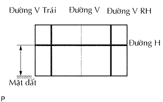
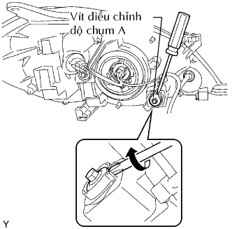
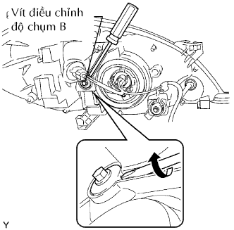

CỤM ĐÈN PHA > ĐIỀU CHỈNH |
| 1. CHUẨN BỊ CHỈNH ĐỘ HỘI TỤ ĐÈN PHA |
Chuẩn bị xe:
| 2. CHỈNH ĐỘ HỘI TỤ ĐÈN PHA (Dùng màn hình) |
Chuẩn bị xe theo các điều kiện sau:
Chuẩn bị một miếng giấy trắng dày có kích thước khoảng 2 m chiều cao và 4 m chiều rộng để dùng làm màn hình.
Hãy vẽ một đường thẳng đứng đi qua tâm của màn hình (đường V).
Đặt màn hình như trong hình vẽ.
|  |
Vẽ các đường cơ bản (đường H, V LH và V RH) trên màn hình như trong hình Vẽ.
Đường H (độ cao đèn pha):
Vẽ một đường ngang qua màn hình sao cho nó đi qua dấu tâm. Đường H phải có cùng độ cao với dấu tâm của bóng đèn pha của đèn cốt.
Đường V LH, V RH (vị trí dấu tâm của đèn pha LH và RH):
Vẽ 2 đường thẳng sao cho chúng cắt đường H tại các dấu điểm tâm.
| 3. KIỂM TRA ĐỘ HỘI TỤ ĐÈN PHA |
Chọn một đèn pha để kiểm tra trước. Che hay tháo giắc của đèn pha kia để tránh cho ánh sáng từ đèn pha đó không ảnh hưởng đến việc kiểm tra hội tụ đèn sương mù.
Khởi động động cơ.
Bật đèn pha và chắc chắn rằng đường phân cách nằm trong vùng tiêu chuẩn như trong hình vẽ.
| 4. KIỂM TRA ĐỘ HỘI TỤ ĐÈN PHA |
|  |
Chỉnh độ hội tụ thẳng đứng đèn pha vào phạm vi tiêu chuẩn bằng cách xoay vít chỉnh A bằng tôvít.
|  |
Chỉnh độ hội tụ ngang đèn pha vào phạm vi tiêu chuẩn bằng cách xoay vít chỉnh B bằng tôvít.